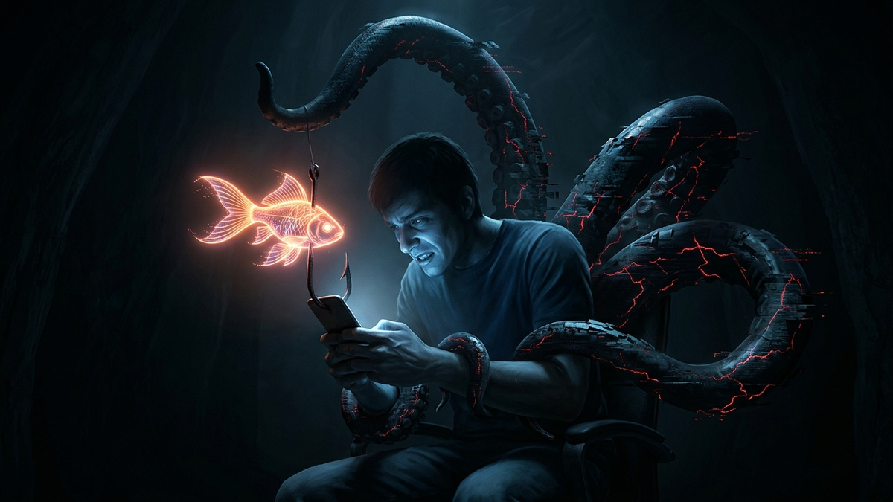

Listen up. I've spent 15 years cleaning up digital messes, from corporate data breaches to emptied crypto wallets. The tactics change, but the psychology doesn't. Airdrop scams are just the 21st-century version of a guy in a trench coat selling "genuine" Rolexes in a dark alley. They prey on your greed, your fear of missing out (FOMO), and your hope that you've finally hit the jackpot. They dangle the promise of thousands of dollars in "free" tokens, and all you have to do is click a link and sign a transaction.
Let's be brutally honest: that click is you handing over the keys to your entire digital vault. A legitimate airdrop from a real project is rare and usually happens automatically or is announced through very clear, official channels. These phishing scams, however, are an epidemic. They are designed to look identical to the real thing, tricking you into signing a transaction that gives a malicious smart contract permission to drain every valuable asset you own. This guide is your Kevlar vest. I'm not here to give you vague advice; I'm here to give you a hardened, step-by-step security protocol to make you the kind of target scammers hate: the one who sees them coming.
Before we touch a single line of code or setting, you need to understand the battlefield. The fight isn't happening on the blockchain; it's happening inside your head. Scammers are not brilliant hackers; they are master social engineers. They know that under the right pressure, the smartest people make the dumbest mistakes. They weaponize your own human nature against you, and if you don't recognize the attack, you've already lost.
Their primary weapon is FOMO (Fear Of Missing Out). They create an illusion that everyone else is getting rich off this secret airdrop, and you're about to be left behind. They'll use bots on Twitter or Telegram to create fake conversations like, "Wow, I can't believe I just got $5,000 from the [FakeProject] airdrop!" This makes the opportunity feel real and fleeting, pushing you to act before you think. It’s a manufactured gold rush, and they’re selling you the map that leads off a cliff.
Next, they inject Urgency. You'll see countdown timers: "Claim your 10,000 tokens in the next 24 hours or they'll be burned forever!" This is a classic sales tactic designed to shut down your critical thinking. When you're rushed, you don't have time to check the URL, research the project, or ask a knowledgeable friend. You just want to get your "free money" before the clock hits zero. Your rational brain gets sidelined by your panicked, greedy lizard brain.
Finally, they abuse Authority and Trust. Scammers will clone the entire website of a famous project like Uniswap or OpenSea, pixel for pixel. They'll create a domain that's one letter off (e.g., opensea.io vs. opensea.io.xyz). They'll even hack a verified Twitter account and post the phishing link from a trusted source. You see a familiar logo, a professional design, and a blue checkmark, and your brain's trust--based shortcuts kick in. You assume it's legitimate because it *looks* legitimate. This is a fatal assumption in the crypto world. Your default setting must be zero trust.
A good sysadmin can smell a problem before the alarms go off. You need to develop that same sixth sense for crypto scams. These scammers are often lazy and work in bulk, leaving behind a trail of obvious clues. You just need to know what to look for. Think of this as your pre-flight checklist. If even one of these things is off, you abort the mission. No exceptions.
First, dissect the Source of the Information. Where did you hear about this airdrop? Was it a direct message (DM) on Discord, Telegram, or Twitter? Legitimate projects will NEVER DM you a link to claim an airdrop or provide support. That DM is from a scammer, 100% of the time. Was it a reply to a popular influencer's tweet? Scammers use armies of bots to spam these links in the replies, hoping to catch someone scrolling. The only trustworthy source is a project's official, verified Twitter account or a blog post on their official, bookmarked website.
Next, scrutinize the Domain Name and URL. This is where most people get tripped up. Hover your mouse over the link before you click. Look at it with extreme prejudice. Is it spelled correctly? A common trick is using letters that look similar, like a lowercase 'l' for an uppercase 'I'. Or they'll add a subtle prefix or suffix, like `claim-uniswap.org` instead of `uniswap.org`. Pay close attention to the Top-Level Domain (TLD). If it's a `.xyz`, `.vip`, `.buzz`, or some other obscure TLD for a major financial protocol, it's a scam. Big projects use standard `.com`, `.org`, or `.io` domains.
Another massive red flag is the "Surprise Token" in Your Wallet. You open your wallet and see 1,000,000 tokens of something called "SuperMegaCoin" valued at $10,000. You don't remember buying it. This is bait. The token itself is worthless and often coded so it can't be sold on a normal exchange. When you try to sell it, you'll get an error that directs you to their custom-built, malicious website to "enable trading" or "claim" the tokens. The moment you connect your wallet to that site and sign the transaction, your wallet is drained. If you don't know where a token came from, ignore it. It's a digital landmine.
Okay, let's get into the guts of the machine. How does clicking a link and signing a message lead to an empty wallet? It’s not magic; it’s a specific, technical exploitation of how blockchains work. When you just send Bitcoin or Ethereum to someone, that's a simple transfer. But when you interact with a Decentralized Application (dApp), you're not just sending money; you're running code by signing a transaction that executes a function in a smart contract.
The scammers trick you into signing one of two main types of malicious requests. The first is a malicious signature request (`personal_sign`). Your wallet pops up a message that looks like you're just logging in. But what this can do is give the scammer a signed message from your wallet that they can use as authentication. It's like you signing a blank piece of paper, and they can later write "I authorize you to access my bank account" above your signature. It's less common for direct drains but can be used to compromise connected accounts.
The real killer is the malicious token approval. Specifically, they trick you into signing a transaction that calls the `setApprovalForAll` or `approve` function on your assets. Think of your wallet as a bank vault. A normal transaction is you telling the bank, "Send $100 to Bob." An `approve` transaction is you telling the bank, "Hey, this other guy, the scammer, is allowed to withdraw up to $100,000 from my account whenever he wants." The most dangerous, `setApprovalForAll`, is you saying, "This guy has my PIN code and a key to my vault. He can take anything and everything, now and forever, until I manually revoke his access." The scammer's website will say "Claim Airdrop," but the transaction you are actually signing says "Give scammer unlimited access to all my NFTs."
These attacks are powered by "drainer scripts" that are sold on the dark web. The scammer doesn't even need to be a good coder. They buy the script, set up a convincing phishing website, and wait for victims. When you sign the malicious approval, the script immediately and automatically scans your wallet for all valuable assets—your stablecoins, your blue-chip NFTs, your governance tokens—and transfers them out to the scammer's wallet in a series of rapid-fire transactions. By the time you realize what happened, it's all gone.
Humanize your text and bypass any AI detector instantly with Undetectable AI.
BYPASS AI DETECTION NOW💡 Expert IT Tip: Use a transaction simulator browser extension like Pocket Universe or Fire. These are non-negotiable tools. Before MetaMask or another wallet even shows you the cryptic signature request, these tools pop up a separate window that translates the transaction into plain, human-readable English. It will literally say, "WARNING: This transaction will give control of ALL your Bored Ape NFTs to an unknown address." It's like having an honest lawyer read the fine print for you before you sign a contract. This one tool kills 99% of these scams.
Hope is not a security strategy. You need to build a system that protects you even when you're tired, distracted, or feeling greedy. A proper security setup makes it nearly impossible for these scams to succeed, even if you accidentally click a bad link. This is about building layers of defense, so if one layer fails, another one catches you.
Your first and most important layer is a Hardware Wallet. I don't care if you have $100 or $1 million in crypto; get a Ledger or a Trezor. A software wallet like MetaMask keeps your private keys on your computer, which is connected to the internet. It’s like keeping your house key under the doormat. A hardware wallet stores your private keys on a separate, offline device. To approve any transaction, you have to physically press a button on that device. This means even if your computer is riddled with malware and a scammer is watching your screen, they cannot sign a transaction to drain your funds because they can't physically press the button on the device in your hand. It's the single biggest security upgrade you can make.
Next, you must adopt the Burner Wallet Strategy. Stop connecting your main wallet—your "hodl" wallet where you keep your long-term investments—to dApps. It's insane. Create a second, or even third, wallet. This is your "burner" or "hot" wallet. You keep only a small amount of ETH for gas fees and the specific tokens you intend to use for a transaction. You use this burner to interact with new mints, new DeFi protocols, and airdrop claims. If that wallet gets compromised, the scammer gets away with $50 worth of crypto, not your entire life savings. Your main wallet, protected by a hardware device, should only be used for two things: sending funds to your burner and receiving funds from exchanges.
Your browser is a major weak point. Practice good Digital Hygiene. Create a dedicated browser profile (e.g., a new Chrome Person) used ONLY for crypto activities. Do not install any unnecessary extensions; every extension is a potential attack vector that could be sold to a malicious actor or have a vulnerability. Don't use this browser for email, social media, or random web surfing. This compartmentalization prevents a vulnerability from one area of your digital life from spilling over and compromising your assets.
💡 Expert IT Tip: Make a habit of regularly revoking token approvals. Go to a trusted site like Revoke.cash once a month. Connect your wallet, and it will show you a list of every single smart contract you have ever given permission to access your tokens. You will be shocked by how long this list is. If you see an approval for a dApp you haven't used in months, or one you don't recognize, revoke it. This is like going through your bank account and cancelling old automatic payment subscriptions you forgot about. It costs a small gas fee but cleans your slate and dramatically reduces your attack surface.
Even the best of us can make a mistake. You're tired, you're in a rush, and you click. Your heart sinks as you see your NFTs and tokens start leaving your wallet. Panic is your enemy. You have a very, very small window of time to act, and what you do in the next five minutes will determine if you can salvage anything. Do not just sit there in shock. Execute this protocol immediately.
Step 1: Isolate and Assess. If you're on a computer, disconnect it from the WiFi or unplug the ethernet cable. This won't stop the transactions already in motion, but it can prevent the malicious site from prompting you for further signatures. Your immediate goal is to understand what permission you gave. Did you sign a `setApprovalForAll` on your NFTs? Or an `approve` on your USDC? The drainer script will target the most valuable assets first, so you need to identify what's still in your wallet that is vulnerable.
Step 2: Create a New, Clean Wallet. Do this on a different device if possible, like your phone, or a completely different computer. If not, use a different browser. Write down the new seed phrase on paper and secure it. This new wallet is your lifeboat. Your old wallet is a sinking ship, and you need to get the survivors off it. Copy the new wallet's public address; you're going to need it.
Step 3: The Race - Revoke and Transfer. This is a battle against the scammer's automated script, and you need to be fast. On your compromised machine, go directly to Revoke.cash. Connect your compromised wallet and immediately find the malicious contract approval you just signed. Click "Revoke." This will require a gas fee. While you wait for that revocation transaction to confirm, open a new tab and go to OpenSea or your wallet's interface. Start initiating transfers of any remaining high-value assets from the compromised wallet to your new, clean lifeboat wallet. You may need to set a higher gas fee (a "priority fee") to get your transactions to confirm before the scammer's next drain transaction. It's a frantic, high-stakes race. Focus on saving your most valuable assets first.
Step 4: Report and Learn. Once you've saved what you can, the wallet is a lost cause. Do not send any new funds to it, ever. Report the scammer's website to Google Safe Browsing and PhishTank. Report their wallet address on Etherscan. Share the details with the crypto community on Twitter to warn others. Then, do a cold, hard post-mortem. Why did you click the link? What red flag did you ignore? What part of your security setup failed? Don't just be sad; be analytical. The tuition for this lesson was high, so make sure you learn from it. Let the anger and frustration fuel a new, permanent state of heightened paranoia and security awareness.
The world of crypto offers incredible freedom and opportunity, but it comes with a heavy burden of personal responsibility. There is no bank to call to reverse a fraudulent charge. There is no IT department to reset your password. You are the administrator, the security guard, and the CEO of your own digital bank. The mindset that keeps you safe is simple: trust nothing and verify everything. Every link is a potential trap, every DM is a scam, and every offer of "free money" is bait.
Stop hunting for the next magic airdrop that will make you rich overnight. Instead, focus on building an impenetrable security process. Use a hardware wallet, operate with a burner, use transaction simulators, and revoke permissions like it's a religious ritual. The real 100x gain isn't in some random meme coin; it's in learning to protect the assets you already have. Be skeptical. Be methodical. Be paranoid. In this space, the paranoid survive.
Don't wait for the headlines. Our Private Telegram Channel delivers real-time AI security updates and digital wealth strategies before they go viral. Stay protected. Stay ahead.
⚡ JOIN THE 1% NOWNo sign-up required. Instantly check risks, analyze AI text, or calculate your digital finances.